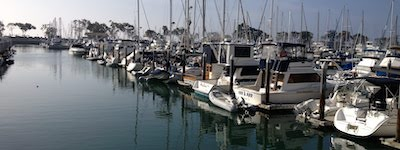

Restaurant Description
Whether driving along Highway 1, or sunsetting at D's Harbor, West Coast's iconic, Harbor's Grill and Diner, serves up the taste of joy in every burger, sandwich and fry. This classic diner has been proudly serving locals and distant travelers, alike, for the past 20 years!